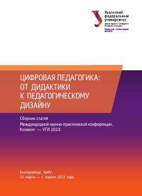

ЦПRaqamli ta'lim muhiti va pedagogik dizayn masalalariga bag'ishlangan ilmiy maqolalar to'plami.
Ushbu to'plam raqamli ta'lim muhitidagi pedagogik amaliyotlar, didaktika va pedagogik dizayn masalalariga bag'ishlangan xalqaro ilmiy-amaliy konferensiya materiallarini o'z ichiga oladi. Unda raqamli pedagogikaning falsafiy asoslari, axborot texnologiyalarining ta'lim jarayoniga ta'siri va zamonaviy o'qitish metodikalari tahlil qilinadi.